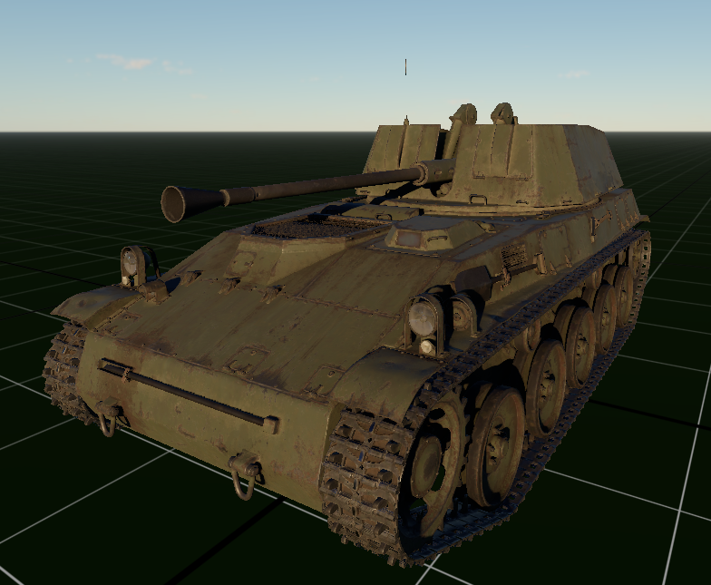

Strona główna
Kontakt
Quiz
Galeria
Rodzaje Pocisków
Przełącz tryb
Rodzaje Pocisków Czołgowych
Dowiedz się więcej o różnych typach pocisków używanych w czołgach.
Pocisk AP (Armor Piercing)
Pocisk HE (High Explosive)
Pocisk HEAT (High Explosive Anti-Tank)
Pocisk APFSDS (Armor Piercing Fin-Stabilized Discarding Sabot)